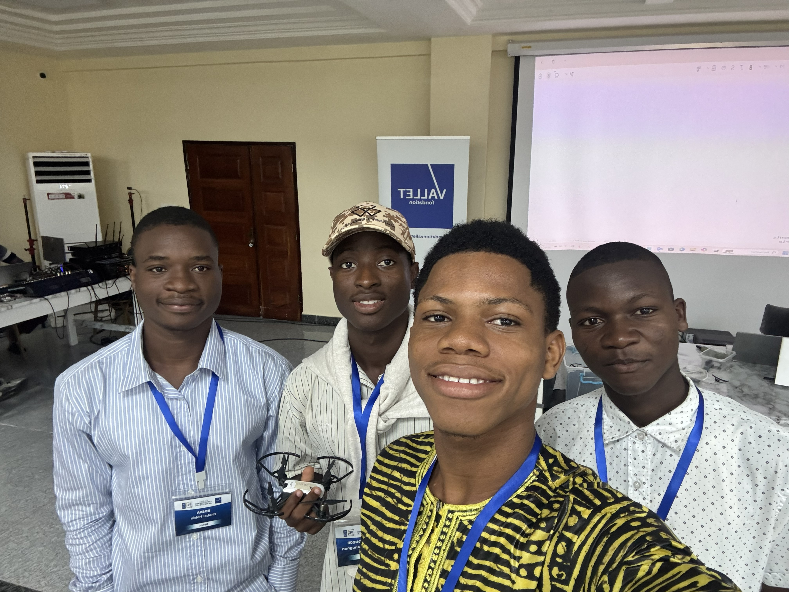
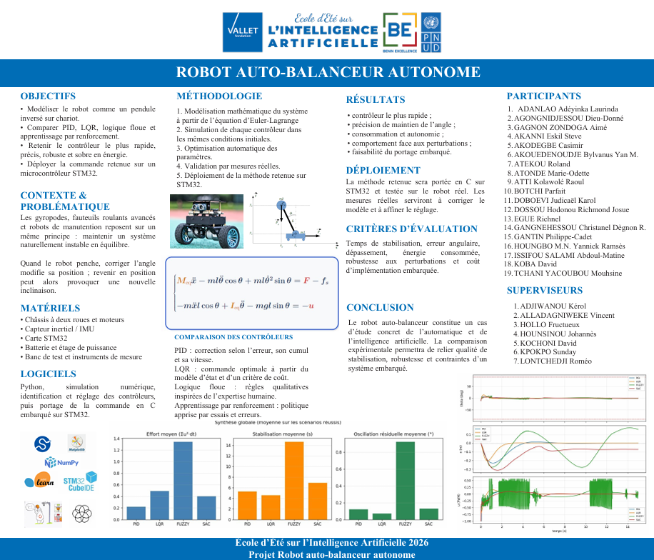
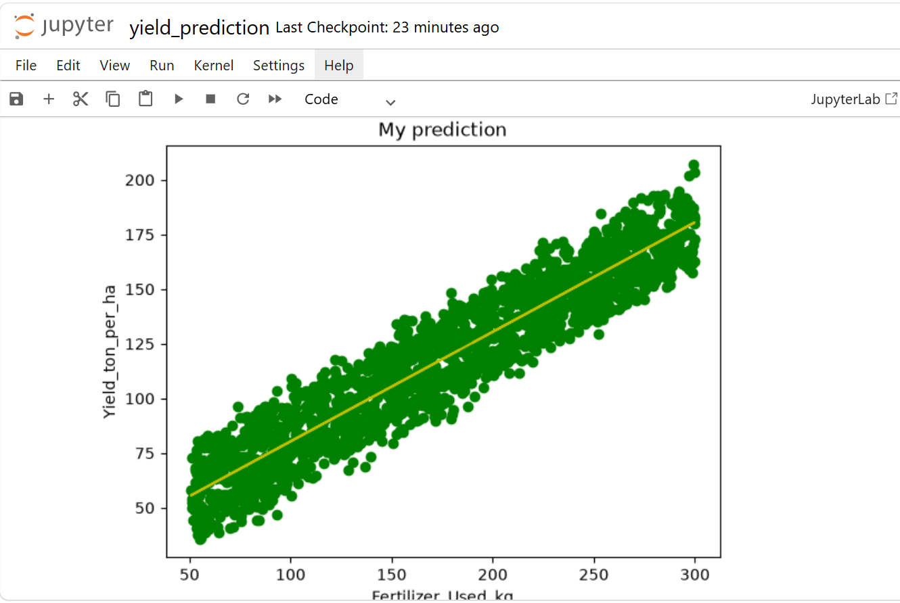
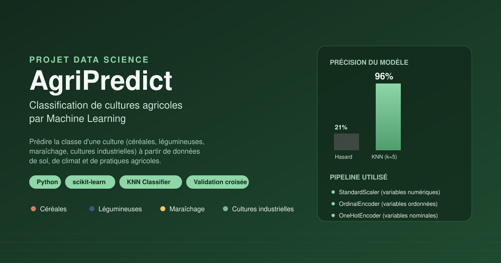
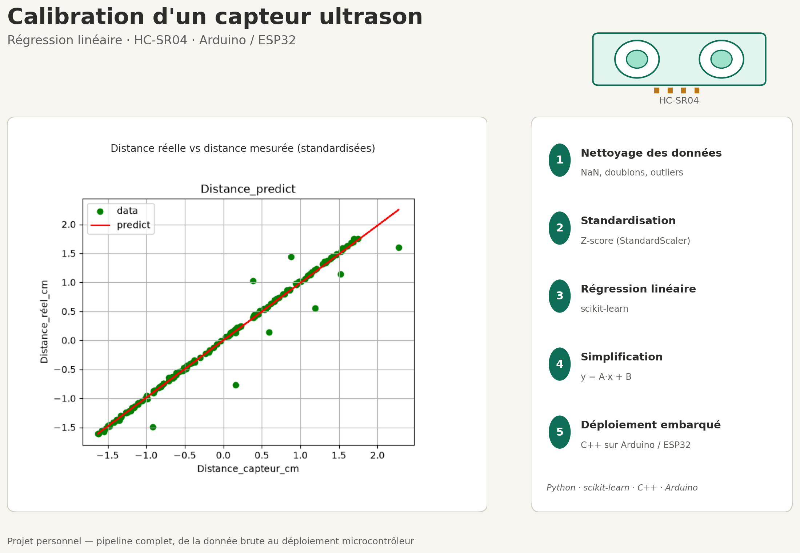
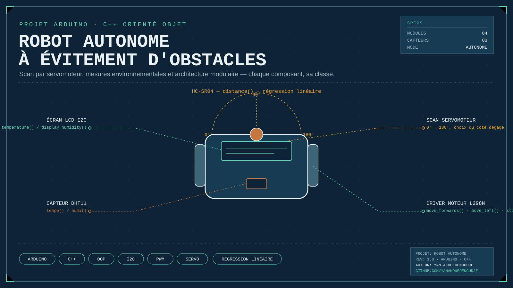
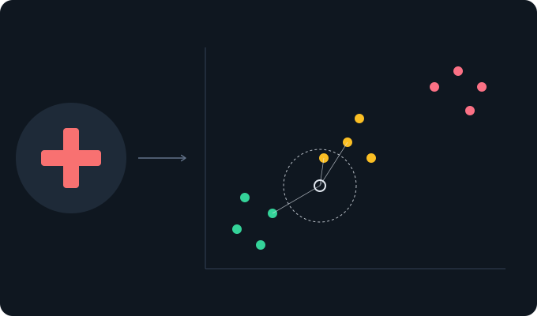

Contrôle Multimodal d'un Drone DJI Tello (Vocal, Gestuel et Manuel)
Développement d'une interface de pilotage intelligente et multimodale pour le drone DJI Tello. Elle intègre la commande vocale en temps réel et le guidage gestuel par vision par ordinateur au signal de la main. Une interface manuelle au clavier complète l'ensemble pour offrir un contrôle de secours d'une précision maximale.

Robot éviteur d'obstacle
Conception et réalisation d'un robot mobile autonome capable de naviguer dans un environnement inconnu tout en évitant les obstacles. Il embarque un capteur ultrason pour mesurer la distance en temps réel et un servomoteur permettant de balayer l'espace pour choisir la meilleure trajectoire. Le système analyse les données pour stopper les moteurs, réorienter le robot et poursuivre sa navigation en toute sécurité.

Robot auto-balanceur autonome
Ce projet consiste à modéliser un robot auto-balanceur comme un pendule inversé sur chariot, puis à comparer plusieurs stratégies de contrôle PID, LQR, logique floue et apprentissage par renforcement afin d'identifier l'approche la plus rapide, précise, robuste et économe en énergie. La commande retenue a ensuite été déployée et testée en conditions réelles sur un microcontrôleur STM32, validant la faisabilité d'un système embarqué d'équilibrage autonome.

Yield prediction
Ce projet utilise la régression linéaire pour modéliser la relation entre la quantité d'engrais épandue et le rendement du maïs, à partir d'un jeu de données agricole, en s'appuyant sur une analyse de corrélation pour justifier le choix de la variable prédictive.

AgriPredict
Modèle KNN (scikit-learn) prédisant la classe d'une culture agricole à partir de données de sol et de climat, avec prétraitement adapté par type de variable. Précision de 96% en validation croisée, contre 21% pour une prédiction aléatoire.

Calibration d'un capteur ultrason par régression linéaire
Calibration d'un capteur ultrason HC-SR04 par régression linéaire : nettoyage et standardisation des données (StandardScaler), entraînement d'un modèle scikit-learn, puis simplification mathématique en une équation linéaire pour un déploiement optimisé en C++ sur Arduino Uno et ESP32.

Robot Mobile Éviteur d'Obstacles & Station Météo Embarquée
Conception d'un robot autonome en C++ POO combinant navigation intelligente et mesure microclimatique. Le système balaye son environnement pour éviter les collisions tout en affichant la température et l'humidité en temps réel.

Prédiction du Risque de Diabète par Machine Learning
Conception d'un pipeline de classification en Python (scikit-learn) prédisan t le niveau de risque de diabète d'un patient à partir de données démographiques, physiologiques et de mode de vie. Le système combine un prétraitement structuré de s variables numériques et catégorielles avec un modèle KNN optimisé par recherche d'hyperparamètres.